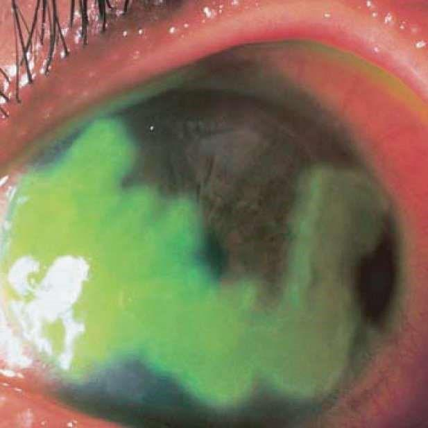

Cornea · Dendritic ulcer
Clinical picture — symptoms and signs
Symptoms:
- Pricky pain, referred headache, reflex lacrimation and photophobia.
- Pain is only mild due to corneal hypoesthesia (in recurrent cases).
- Defective vision as the ulcer is usually central in position.
Signs:
- Lid shows slight edema and blepharospasm.
- Circumcorneal ciliary injection.
- Corneal ulcer is shown by:
- 1) Loss of luster.
- 2) Positive fluorescein test.
